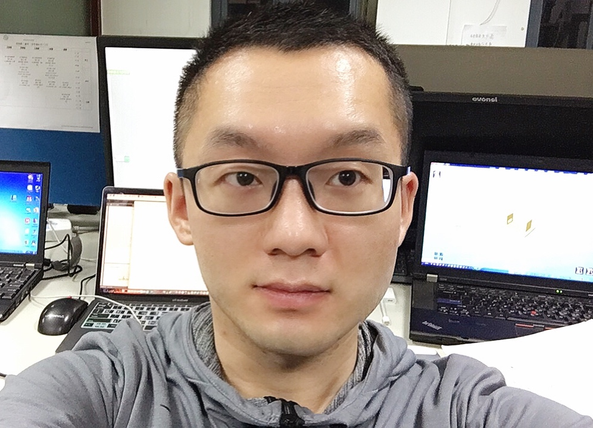

|
Xin Li | 李鑫
|
 |
Xin Li, Ph.D. Candidate
ShanghaiTech University
Nanyang Technological University (Joint Training)
University of Chinese Academy of Sciences
Shanghai Institute of Microsystem and Information Technology, Chinese Academy of Sciences
Email: china.lixin1@gmail.com
[
Google Scholar][Researchgate][Linkedin][
CV]
|
News
-
[07-12-2021] “ViPSN-pluck: A Transient-motion-powered Motion Detector” is accepted by the IEEE IOTJ!
-
[07-10-2021] Related work of ViPSN-pluck is awarded the VEH 2021 Best Paper!
-
[01-30-2021] “Live Demo of A Transient-motion-powered Human Motion Detector” is accepted by the IEEE ISCAS 2021!
-
[09-15-2020] “System Design and Implementation of A Transient-motion-powered IoT Sensor Node” is awarded the SMASIS 2020 Finalist of Best Student Hardware Competition!
-
[07-23-2020] “ViPSN: a vibration-powered IoT platform” is accepted by the IEEE IOTJ!
-
[01-30-2020] “Competition: Using DeCoT+ to Collect Data under Interference” is awarded the 1st place at the EWSN 2019 Dependability Competition!
-
[08-18-2019] ViPSN is awarded the 1st Runner Up of the IEEE Industrial Electronics Society (IES) Inter-Chapter Paper Competition!
About me
I am now a Ph.D. candidate at ShanghaiTech University and jointly trained with Nanyang Technological University, Singapore. I am also with the Shanghai Institute of Microsystem and Information Technology, Chinese Academy of Sciences, and University of Chinese
Academy of Sciences. My research advisor is Prof. Junrui Liang. With the vision of building an Internet of Moving Things free from batteries, less polluting, and sustainable,
my research focused on designing effective, reliable, and scalable battery-free IoT solutions based on kinetic energy harvesting.
Awards
Conference Awards
-
Best Paper of the 3rd International Conference on Vibration and Energy Harvesting Applications (VEH) in 2021.
-
Best Student Hardware Competition Finalist of the ASME Conference on Smart Materials, Adaptive Structures and Intelligent Systems (SMASIS) in 2020.
-
1st place at the International Conference on Embedded Wireless Systems and Networks (EWSN) Dependability Competition – Category “Data Collection” in 2019.
-
3rd place at the International Conference on Embedded Wireless Systems and Networks (EWSN) Dependability Competition in 2018.
Society Awards
Education
-
Ph.D. (Joint Training) in Electronic and Information Engineering, Nanyang Technological University, Singapore, Sept. 2021 - Present
-
Ph.D. in Electronic and Information Engineering, ShanghaiTech University/University of Chinese Academy of Sciences, Sept. 2018 - Present
-
M.Sc in Information and Communication Engineering, University of Chinese Academy of Sciences, Sept. 2017 - Jun. 2018
-
B.Ec. in International Economy and Trading, North University of China, Sept. 2012- Jun. 2016
-
B.E. in Weapon Mechatronics Engineering, North University of China, Sept. 2012- Jun. 2016
Research Interests
-
Energy harvesting
-
Intermittent computing
-
Ubiquitous computing
-
Battery-free IoT
|